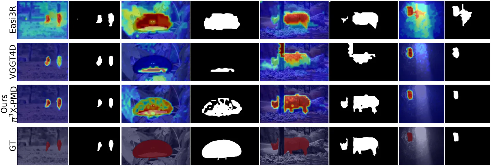
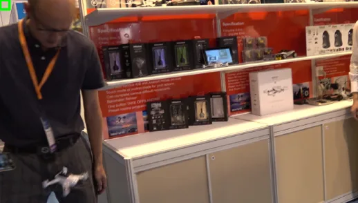

ProMo3D：探测冻结 3D 基础模型里的运动线索
ProMo3D: Probing Motion Cues in Frozen 3D Foundation Models
运动理解不是「要再训一个大解码器」，而是「冻结 token 里已有、只差一个低秩二次读出」：π³X 上 rank-8 探针仅 0.295M 参数，DAVIS17 粗掩码 J-M 73.7（GeoMotion 75.4），加 SAM2 后 81.9/92.3（GeoMotion+SAM2 81.1/92.6），训练数据只有 160 个视频、推理只加 4.2 ms/帧。
DAVIS17 J-M/J-R
trainable params
added latency per frame
training videos
作者、单位与技术谱系 · Research context
作者与单位
研究脉络
- π³ / π³X（Wang et al., ICLR 2026）与 VGGT（Wang et al., CVPR 2025）方法基座关系：本文把这两类前馈多视图几何骨干当作冻结特征源，π³X 是主实验骨干（18 个 inter-frame 块），VGGT 的 padded-token 设计是锚点假设的前提。[论文 §3、§3.2 与 Table 1]
- GeoMotion（He et al., CVPR 2026）直接对照/上游强基线关系：同样从 π³ 的潜在 4D 几何取运动先验，但用高容量解码器 + RAFT 光流；本文以它作为「重解码器路线」的标尺，并在同表比较。[论文 §1、§2.2 与 Table 2/4]
- Easi3R / VGGT4D（免训练启发式）与 Li et al. 二次探针同期前作与探针方法来源关系：免训练启发式是本文要跨过的下限；「成对二次探针」的构造沿用自 Li 等关于自监督 ViT 物体绑定的工作。[论文 §2.2、§2.3 与 §3]
合作网络
- Xiaoang Zhang ↔ Benjamin Busam（TUM 共同署名）Xiaoang Zhang → Benjamin Busam关系：共同署名（同一论文、同一高校）[论文首页署名]
- TUM ↔ MCML ↔ Obsphera（双重挂靠）Technical University of Munich → Obsphera关系：共同署名（高校—研究中心—企业三方挂靠）[论文首页单位标注]
- ProMo3D → π³X / DA3 / DUSt3R（冻结骨干依赖）ProMo3D → π³X / DA3 / DUSt3R checkpoints关系：明确技术依赖（冻结权重 + 块级 hook）[论文 Table 1 与 §4.2]
作者与三方挂靠单位取自论文首页；「π³X 是主骨干、GeoMotion 是重型对照」由 §3/§4 与 Table 1/2 支持；「访问研究员身份」是论文首页脚注的原文事实。原文未标通讯作者与具体分工，不推断师生或实验室隶属。
方法本质拆解 · What actually changed
是不是微调？
不是微调骨干。π³X、DA3、DUSt3R 全部冻结，只训练一个 rank-8 低秩二次探针（0.295M 参数），用 160 个 YouTube-VOS 视频的成对同/异运动状态标签做二元交叉熵，单张 16 GB 卡即可完成。因此这是一次「表示探测 + 轻量读出」的训练，任何骨干权重都没有被改动。
有没有额外约束？
约束有三层：表示层把成对兼容性限制成对称低秩双线性形式（W_lr=(UᵀV+VᵀU)/2√d，rank ≤ 2k），强制顺序无关；读出层固定一个空间索引锚点（a=0），把成对分数退化成一元静态分数，这等价于假设该锚点恒为静态；评测层把多数据集标注统一成二值前景/背景，并用 τ=0.35 的 patch 动态占比阈值定义 token 标签。这三条都不是「物理运动」的约束，而是「标注语义」的约束，读数字时必须记住。
推理/后端到底做了什么？
推理是「冻结骨干前向 + 一次探针读出 + 上采样 + 可选 SAM2」：token 级动态分数双线性上采样到原图，阈值化成粗掩码，再用 SAM2 做掩码精化。没有迭代优化、没有跨帧传播、没有光流；所有锚点-目标分数并行计算。额外成本 1.62 GFLOPs 与 4.2 ms/帧（0.87%），SAM2 的开销另计，本文未把它算进这 4.2 ms。
方法本质是什么？
本质是把「动态场景理解」降级成「冻结表示里的二值可分性读出」：先用成对分类证明可分，再用固定锚点把成对分数变成稠密图。它改变的是我们对骨干能力的判断——运动信息不需要重建模，只需要低秩投影；它没有做的是运动类型分类、跨帧轨迹、以及与位姿估计的联合优化，所以它给出的是「哪里在动」，不是「怎么动」。
输入冻结的 3D 几何骨干 token 与一个固定锚点；用 rank-8 对称二次探针读出成对同/异运动状态，再取补得到稠密动态分数；直接效果是用 0.295M 参数与 4.2 ms/帧在 DAVIS17 上做到 81.9 J-M，接近用 80M 参数、五数据集训练的重型解码器。

结论与问题Conclusion & Motivation
核心结论
ProMo3D 的结论是：冻结前馈 3D 基础模型的 token 里已经存在静态/动态可分信息，且读出它只需要一个低秩二次探针，不需要重训解码器。在 π³X 上用 rank-8 探针（0.295M 参数，训练 160 个 YouTube-VOS 视频）得到 DAVIS17 粗掩码 J-M/J-R 73.7/91.0、SegTrackv2 72.9/94.0、FBMS-59 73.5/88.8；叠加 SAM2 后为 81.9/92.3、86.4/99.3、83.2/89.3，与 GeoMotion+SAM2（81.1/92.6、77.3、72.5）同一水平，但训练数据与可训练参数量小两个量级以上。推理只增加 1.62 GFLOPs 与 4.2 ms/帧。作者进一步用秩受限与谱分析说明运动线索集中在低维子空间：k=4 与 k=8 的成对准确率 95.70% 与 95.72%，几乎不差。
动机与问题
动态 4D 理解要同时拆开静态几何、相机运动与独立物体运动，现有两条路都有明显代价：大规模监督方法需要稠密标注与高算力；免训练启发式（Easi3R、VGGT4D）从冻结模型的注意力或 key–query Gram 矩阵里抠线索，便宜但脆弱、与架构强绑定，且与学习式解码器差距很大。作者提出的第三条路基于三个观察：近年前馈骨干的训练语料已包含多域 4D 数据；这些骨干在动态场景下的位姿估计仍然稳健；已有工作显示 π³ 的潜在 4D 几何是运动分割的强先验（但用了高容量解码器）。于是问题被重述为：能否用低容量探针把这部分信息读出来？这个重述很关键——它把「造模块」换成「测可解码性」，先证伪再动手。
方法Method
方法总览
把运动分割写成成对分类：token i、j 的运动标签 y∈{0,1}，标签一致则 z_ij=1，探针输出 ẑ_ij 并做二元交叉熵，骨干全程冻结。比较三种探针：线性（σ(w₁ᵀh_i+w₂ᵀh_j+b)）、对角二次（h_iᵀ diag(α) h_j /√d）、低秩二次（h_iᵀ W_lr h_j + b，W_lr=(UᵀV+VᵀU)/(2√d)，rank ≤ 2k）——对称化是为了匹配 z_ij=z_ji 并保证顺序无关。PMD 再把成对兼容性变成稠密估计：固定空间索引 a=0 的锚点 token，静态分数 p_stat=f(h_a,h_i)、动态分数 p_dyn=1−p_stat，token 网格上双线性上采样到原图分辨率，可选 SAM2 精化。因为所有锚点-目标分数可并行计算，PMD 在冻结骨干之上只多一层读出。
关键技术细节
骨干与块选择是逐层探针定下来的：π³/π³X 取 18 个 inter-frame 块，DA3 取 14 个 inter-frame 块（DA3-GIANT-1.1），DUSt3R 取 12 个 decoder-view-1 块加 4 个 head-in-view-1 块，每篇只训一个 rank-8 低秩二次探针。锚点选择是这套方法最需要留意的工程细节：对带 padding 的骨干（VGGT、π³X），索引 0 落在 padding 区，天然静态；对非 padding 骨干（DUSt3R、DA3、MASt3R），他们保持同一固定索引约定，并在附录 C.1 做经验分析——也就是说「锚点必静态」是假设而非定理。评测侧，DAVIS、SegTrackv2、FBMS-59 的标注被统一成二值前景/背景，指标是 Jaccard 均值 J-M 与 J-R（Jaccard>0.5 的帧占比）；token 级分析另报动态 token 准确率与相对「全静态」基线的归一化增益。

实验Experiments
实验设置
训练只用 YouTube-VOS 2018 训练集的 160 个视频、验证用 80 个视频，评测基准（DAVIS16/17、SegTrackv2、FBMS-59）完全不参与训练与验证。硬件是单张 RTX 5070 Ti（16 GB），骨干特征提取、探针训练与评测都在同一张卡上完成。指标为 J-M 与 J-R；token 级另报 Acc_dyn 与归一化增益 NG，动态 token 阈值 τ=0.35（patch 内动态像素占比）。对照分三类：无运动掩码监督的 VGGT4D、Easi3R（含 +SAM2）；有监督的 GeoMotion（±SAM2）、Flow-SAM、SegAnyMo；以及不同骨干的 PMD 变体（DUSt3R/DA3/π³/π³X）。所有非 PMD 数字引自被引论文，PMD 数字由本文自行评测。
实验数字与比较
Table 2（J-M/J-R）：π³X-PMD 粗掩码 DAVIS17 73.7/91.0、SegTrackv2 72.9/94.0、FBMS-59 73.5/88.8；加 SAM2 后 81.9/92.3、86.4/99.3、83.2/89.3。对照：GeoMotion 75.4/87.2（DAVIS17，五数据集训练 + RAFT + DINOv2），GeoMotion+SAM2 81.1/92.6、77.3、72.5；Flow-SAM 71.6（DAVIS17 J-M）、84.2（SegTrackv2）、88.7（FBMS-59）；SegAnyMo 76.3（SegTrackv2）、78.3（FBMS-59）；免训练 Easi3R_dust3r 46.9/50.5，+SAM2 60.1/65.3，VGGT4D 56.5/65.6。Table 4 的效率对照：π³X-PMD 0.295M 可训练参数、+1.62 GFLOPs；GeoMotion 80.3M、>309 GFLOPs；Flow-SAM 9.83M、>3.63×10⁴ GFLOPs；推理只加 4.2 ms/帧（占冻结骨干前向的 0.87%）。
消融/失败边界
Table 5 的选择性对照最有说服力：在 YouTube-VOS 验证集上，同状态对占比本来就 84.47%，所以「全判同状态」就有 84.47% 成对准确率；rank-8 探针 95.72%（+11.25 pp）、平衡准确率 91.67%；把标签在帧组内打乱重训后掉回 84.48%（+0.01 pp）、平衡准确率 50.34%，正好回到常数预测器水平——说明增益来自 token 与运动标签的真实对应，而不是数据泄漏。秩消融：k=4 为 95.70%/91.60%，k=8 为 95.72%/91.67%，低秩已经饱和。数据饥饿：固定采样对数、逐步减少训练视频，NG 与 J-M 平缓下降而非崩塌，且 k=8 始终不差于全秩，说明低秩是有效归纳偏置。失败边界有三条：SAM2 精化对 π³X-PMD 的 J-R 只再提 1.3 pp（说明粗掩码已有 91.0% 的帧过 0.5 Jaccard），但对 Easi3R 能提 14.8 pp——增益大小取决于粗掩码是否已经「大体对」；FBMS-59 上 J-M 73.5 明显低于 Flow-SAM 的 88.7；以及语义泄漏：同类静止实例（Fig.6 的静止火烈鸟）会随运动个体一起被判为动态。
局限与迁移Limitations & Transfer
局限与待核验
作者明确承认：空间精度受 ViT token 粒度限制；只做二值静态/动态判断，不区分原地关节运动、局部形变、整体位移等运动类型；存在语义泄漏，归因于物体中心的 YouTube-VOS 监督与冻结语义特征。我们要补的核验点：第一，锚点取索引 0 在带 padding 骨干上「天然静态」，但非 padding 骨干只是经验约定，换成真实视频时锚点可能落在运动区域，需重测；第二，评测的「动态」是标注定义（DAVIS17 把所有有效前景并成动态），并不等于瞬时物理运动，跨数据集比较时口径要统一；第三，所有数字来自单卡单次训练，无随机种子方差，k=4 与 k=8 的 0.02 pp 差异不能当结论；第四，探针是在有掩码标签的 160 个视频上监督训练的，因此不是「免监督」，只是「低监督」，在新域（如自动驾驶街景）上的可迁移性未验证；第五，掩码级指标不能替代位姿级验证——运动掩码对下游 SLAM/BA 的实际收益本文没有测。
与你研究路线的关系
这篇给我们的方法论启示大于模块本身：在给融合前端加「动态点剔除」之前，先在一小批带标注序列上做逐层线性/低秩探针，确认所用骨干的中间层是否已经把动静分开——如果可分，就不该再训一个高容量解码器；如果不可分，才值得投入。可直接迁移的有两点：一是「成对同/异状态分类 + 固定锚点读出」这套构造，它把任意二值属性（动态、退化、失效）变成可探测量，与我们关心的「该帧/该边是否可信」是同一形式；二是 Table 4 那种「参数量 + FLOPs + 每帧时延」三件套报告方式，比只报精度更能说明能否上在线系统（0.87% 的开销是可以接受的）。下一步实验：在我们已有的多视图/序列数据上，用 rank-4/8 探针测 π³X 或 VGGT 的中间层能否预测「该帧是否含动态物体」「该边是否退化」，并与我们现有的残差卡方检验做 ROC 对比；若探针显著更好，再考虑把探针输出作为因子图里动态点的先验权重，而不是硬剔除。

